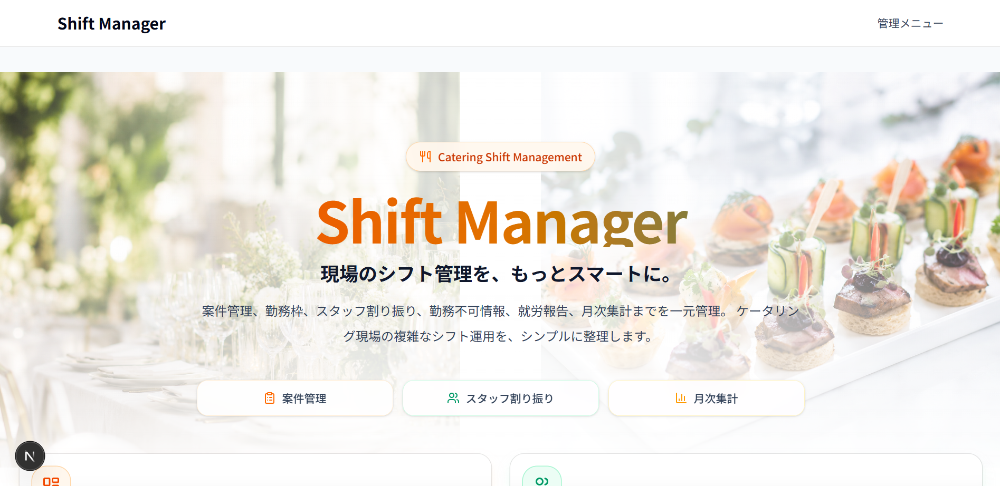

個別連絡に依存したシフト調整
スタッフ一人ひとりに連絡し、返信を確認しながら調整する必要があるため、 人数が増えるほど管理負担が大きくなります。
Portfolio
横浜国立大学 理工学部 数理科学EPで数学を学びながら、 Next.js / TypeScript / java / spring boot / Prisma / PostgreSQL を用いた Webアプリケーション開発に取り組んでいます。
Profile
現場で感じた不便さや業務上の課題を、Webアプリケーションとして解決することに関心があります。
横浜国立大学 理工学部 数理科学EPで数学を学んでいます。 数学で培った構造化して考える力を活かしながら、 Webアプリケーションの設計・実装に取り組んでいます。
Project Overview

Shift Managerは、ケータリング現場のシフト調整を効率化するために開発したWebアプリです。 案件ごとに現場、必要人数、集合場所、持ち物、注意事項が異なるため、 固定的なシフト表ではなく、案件単位で情報を管理できる設計にしました。
汎用的なシフト管理ではなく、自分自身が現場で働く中で知った業務の流れに合わせて設計しています。 管理者は案件作成、スタッフ割当、勤務不可情報の確認、月次集計、LINE連絡文の生成まで行えます。
Background
ケータリングのアルバイト先で、社員の方がスタッフ一人ひとりに連絡を取りながら、 案件ごとのシフトを調整している姿を見たことが、Shift Managerを作るきっかけでした。
ケータリングの仕事は、一般的な店舗勤務のように毎回同じ場所・同じ時間で働くわけではありません。 案件ごとにクライアントからの要求が変わります。 当日の進行によって就労時間が前後することもあります。 そのため、曜日固定のシフト表だけでは管理しにくい業務だと感じました。
最初は「シフト管理を楽にできるアプリがあれば便利そうだ」という発想でした。 しかし、実際に考えていくと、万人向けのシフト管理アプリではなく、 ケータリング特有の流動性に合わせた設計が必要だと分かりました。
そこで、自分自身が現場で働く中で知った業務の流れをもとに、 案件・勤務枠・従業員・割当・就労報告・LINEメッセージ作成を分けて管理する構成を考えました。 単に予定を登録するだけでなく、案件ごとの条件や人員状況を整理し、 管理者とスタッフの双方が必要な情報を確認しやすいアプリを目指しました。
Problems
スタッフ一人ひとりに連絡し、返信を確認しながら調整する必要があるため、 人数が増えるほど管理負担が大きくなります。
勤務場所、集合場所、勤務時間、必要人数が案件ごとに異なるため、 固定シフト表では管理しにくい構造があります。
スタッフの勤務不可日と案件の日程を照合しながら候補者を探す作業には手間がかかります。
必要人数に対して何人確定しているのかが分かりにくいと、 人員不足の案件を見落とす可能性があります。
勤務後の報告や月ごとの集計が別々に管理されると、 確認漏れや集計ミスが起きやすくなります。
案件ごとに勤務時間、集合場所、持ち物などを整理して連絡文を作る作業には時間がかかります。
Solutions
案件と勤務時間帯を分けて管理し、勤務枠単位でスタッフを割り当てられるようにしました。
スタッフが勤務不可情報を登録できるようにし、管理者が候補者を判断しやすい構成にしました。
必要人数と割当済み人数を比較し、人員不足の案件を把握しやすくしました。
スタッフが勤務後に報告を提出し、管理者が月ごとに確認できる流れを作りました。
案件情報をもとに、スタッフへ送る連絡文を生成できる機能を追加しました。
繰り返し発生する案件の情報を再利用できるようにし、案件作成の入力負荷を減らしました。
Features
Architecture
シフトを単なる予定表として扱うのではなく、 案件・勤務枠・割当・従業員という単位に分けて管理する設計にしました。
案件名、日付、勤務場所、集合場所、備考などを管理
勤務時間帯、休憩時間、必要人数を管理
どの勤務枠にどの従業員が入るかを管理
名前、役割、時給、在籍状態、勤務不可情報を管理
案件と勤務枠を分離し、勤務枠単位で割当を管理できる構成にしました。
管理者は全体管理、スタッフは自分の予定確認に集中できるように画面を分けました。
登録・更新・削除などの処理はサーバー側で行い、権限確認もサーバー側で実施する設計にしました。
ボタン、カード、ナビゲーション、フォーム部品などを共通化し、保守しやすい構成を意識しました。
UI / UX
管理者が判断しやすく、スタッフが迷わず確認できる画面を目指しました。
管理者が案件や割当状況をまとめて確認しやすいように、テーブル表示を活用しました。
スタッフがスマホから自分のシフトを確認しやすいように、カード表示や下部ナビゲーションを意識しました。
登録・更新時にはローディングやボタンの無効化を行い、二重送信を防ぐ設計にしました。
Screens
案件や確認事項を把握する画面です。
月ごとの案件と充足状況を確認します。
勤務枠、担当者、集合場所、備考などを確認します。
勤務枠ごとにスタッフを割り当てます。
スタッフが勤務できない日を登録します。
勤務後に実績を報告します。
勤務時間や手当を月単位で確認します。
案件情報をもとに連絡文を生成します。
Improvements
初期実装後も、DB設計・画面構成・クエリ・UIを見直し、 より現場の業務フローに近いアプリになるよう改良しました。
データの重複や責務の曖昧さを減らすため、モデル間の関係を見直しました。
一覧画面や詳細画面で必要なデータを効率よく取得できるように見直しました。
案件情報から連絡文を生成できるようにし、管理者の文章作成負担を減らしました。
スタッフがスマホから確認しやすいように、画面構成や表示方法を調整しました。
Tech Stack
Security
見た目上の表示制御だけでなく、サーバー側でも認証・認可を確認することを重視しています。
Learning
業務フローを理解し、それをデータ設計や画面設計に落とし込む難しさを学びました。
現場の言葉をそのままテーブルにするのではなく、責務ごとに分ける必要があると学びました。
管理者とスタッフでは必要な情報が異なるため、同じデータでも見せ方を変える必要があると感じました。
機能追加を進めるほど、責務分離や共通化の重要性を実感しました。
Future
今後は、実運用を想定した信頼性・保守性・通知機能の強化に取り組みたいと考えています。
集計処理や割当処理など、業務に影響しやすい部分から自動テストを追加したいです。
シフト確定時や就労報告の未提出時に通知できる仕組みを追加したいです。
案件や割当の変更履歴を残し、トラブル時に確認できる状態を目指したいです。
月次集計結果をExcel形式で出力できるようにし、実際の確認業務に近づけたいです。
Links
GitHubではコードとREADMEを確認できます。 デモURLでは実際の画面を確認できます。